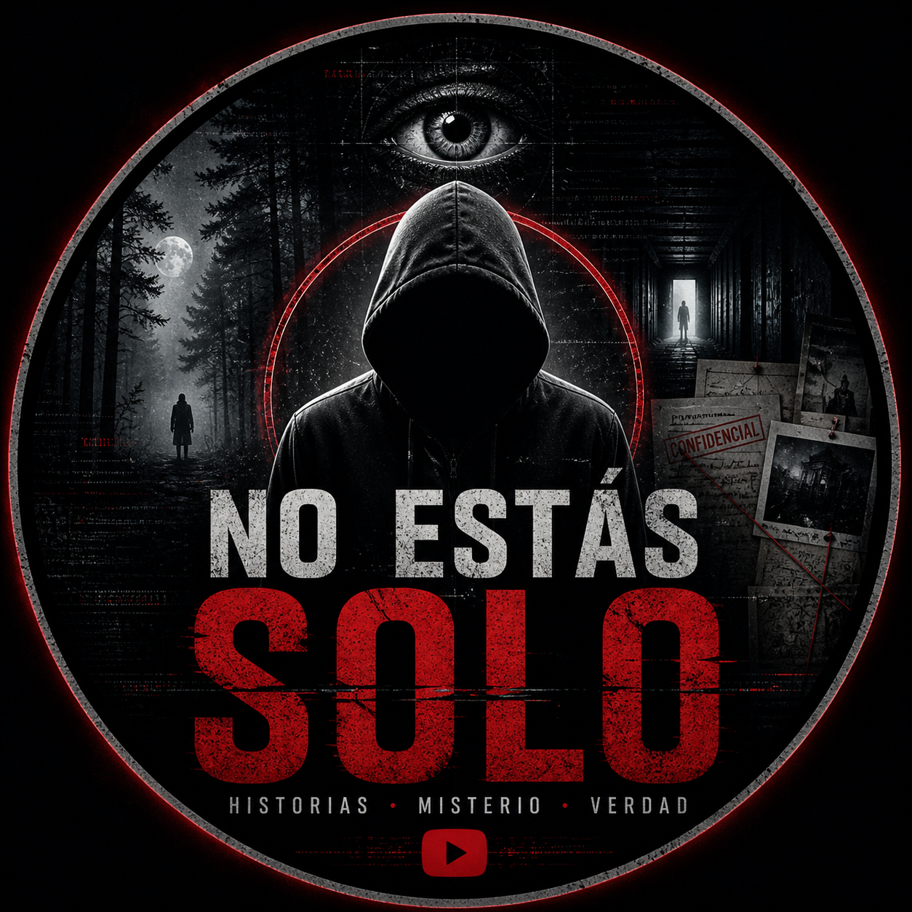

Create
The creator enters a topic or lets the local agent select one. Video Bot creates a Spanish-language short-form script, voice, subtitles, visuals, metadata, and a vertical MP4 file.

Video BotVideo Bot helps an authorized creator generate, review, and publish short vertical videos to TikTok and YouTube from a controlled desktop environment.
The application is built for a single authorized creator or team that controls the local machine where videos are generated and uploaded. It is not a public social network, scraping tool, or analytics service.
The creator enters a topic or lets the local agent select one. Video Bot creates a Spanish-language short-form script, voice, subtitles, visuals, metadata, and a vertical MP4 file.
Generated videos are stored locally in an output folder. The creator can approve or reject each generation before any platform upload is attempted.
After approval, Video Bot can upload to YouTube or publish to TikTok using only the scopes granted by the connected account.
Video Bot uses TikTok Login Kit for user authorization and the TikTok Content Posting API to upload videos to the authorized creator's own TikTok account.
Requested scopes are user.info.basic,
video.upload, and video.publish. The tool
uses video.upload for inbox or draft-style uploads and
video.publish for Direct Post publishing.
The desktop app opens TikTok OAuth in the creator's browser and receives the authorization code through a registered callback URL.
The tool queries creator posting options, selects an allowed privacy level, prepares the caption, and initializes the upload.
The MP4 is uploaded in TikTok-compatible chunks. The creator can then fetch publishing status using the returned publish ID.
Generated videos, prompts, captions, metadata, and OAuth tokens are stored in local project folders controlled by the creator.
These public pages do not include advertising pixels, analytics scripts, or third-party browser tracking.
TikTok access can be revoked from the TikTok account settings, and local token files can be deleted from the creator's machine.